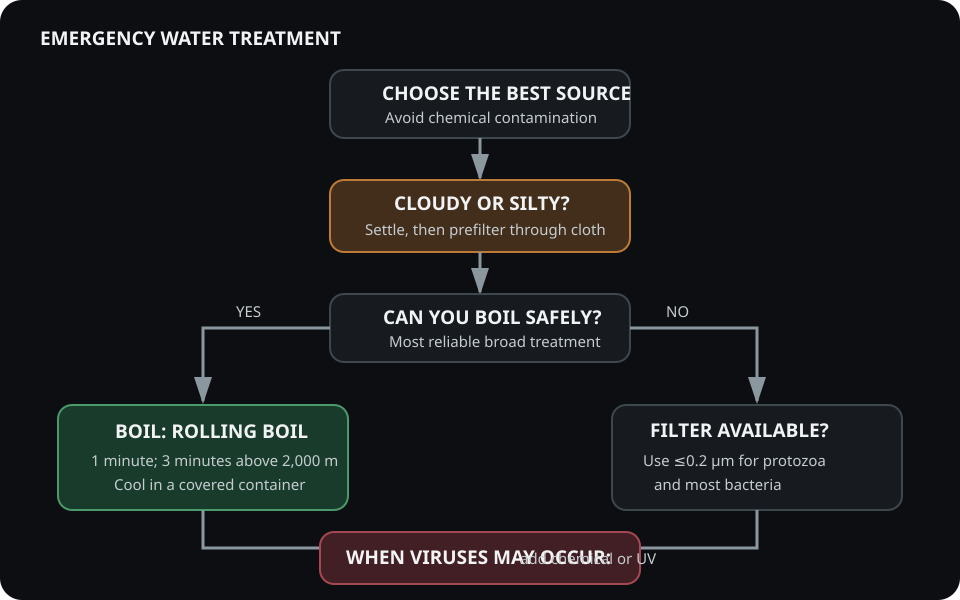

1. Understanding Waterborne Hazards
Protozoa (Giardia, Cryptosporidium), bacteria (E. coli, Vibrio), and viruses (Hep A, Norovirus) are the main biological contaminants. They differ in resistance to chlorine and UV—understand that difference before treatment.

2. Filtration: Mechanical Barriers
Filters physically remove protozoa and bacteria; pore size below 0.2 μm is ideal. Note that viruses require finer treatment (chemical or UV).
- Hollow fiber filters—lightweight, backflushable.
- Activated carbon—adsorbs chemicals and taste compounds.
3. Chemical Disinfection
Chlorine dioxide oxidizes cell walls and proteins; iodine denatures enzymes. Required contact time varies by organism, temperature, turbidity, and product. Follow the product label exactly—some chlorine-dioxide treatments require up to four hours.
4. UV Sterilization
Ultraviolet light at 254 nm damages nucleic acids—prevents replication. Works best in clear water; turbidity reduces efficacy. Always prefilter cloudy water.
5. Field Exercise
Collect water from two sources—turbid and clear. Treat both with the same method. Observe clarity, taste, and note time to complete treatment. Discuss what changed and why.
Researched Water-Treatment Pair
Paid-link disclosure: If you purchase through an Amazon link below, I may earn a commission at no added cost to you.
-
Sawyer Squeeze SP129 FilterView on Amazon (paid link)
A backflushable hollow-fiber filter. Once used, protect it from freezing because internal damage may not be visible.
-
Katadyn Micropur MP1 TabletsView on Amazon (paid link)
A chlorine-dioxide backup for clear water. Follow the package dosage and full contact time; treatment cannot remove chemical contamination.